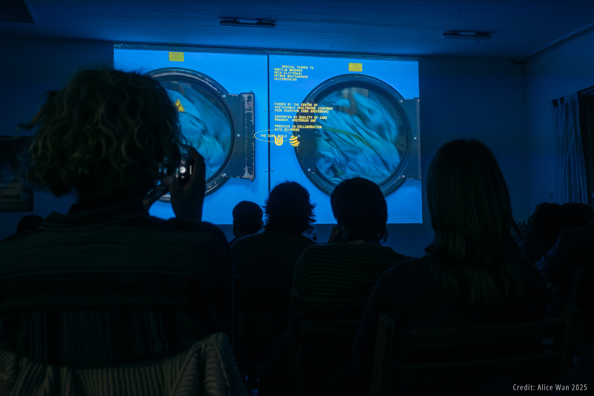
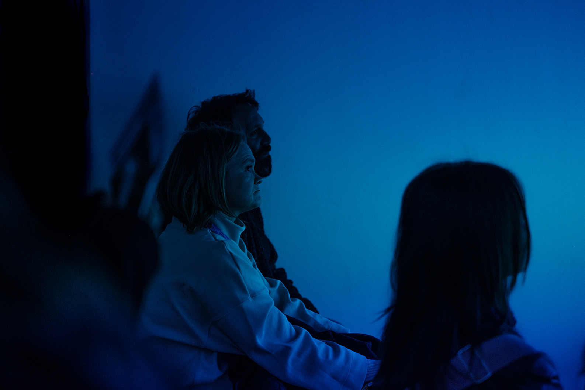
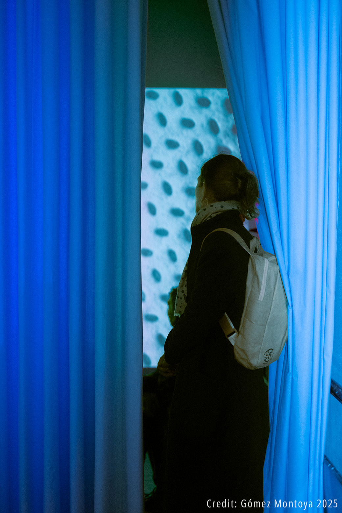
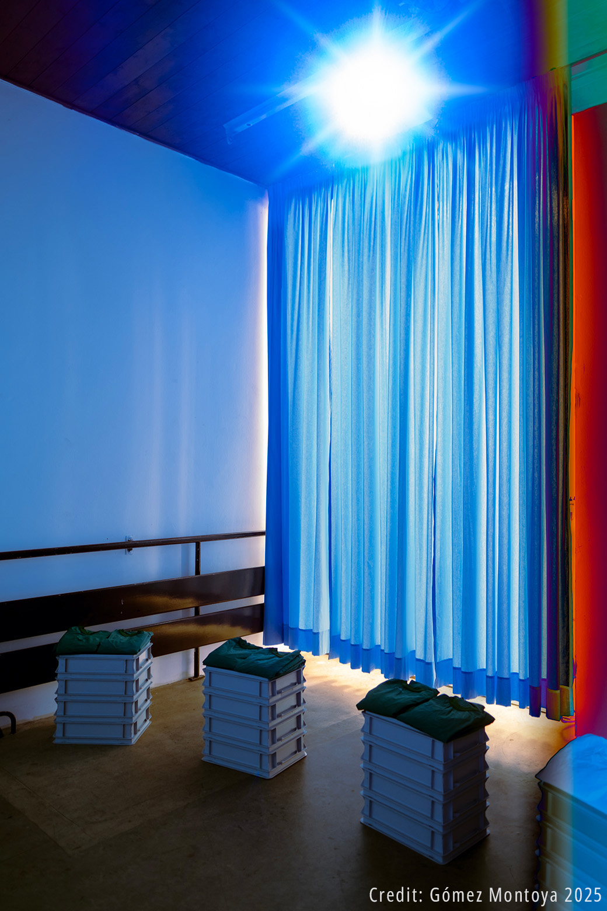
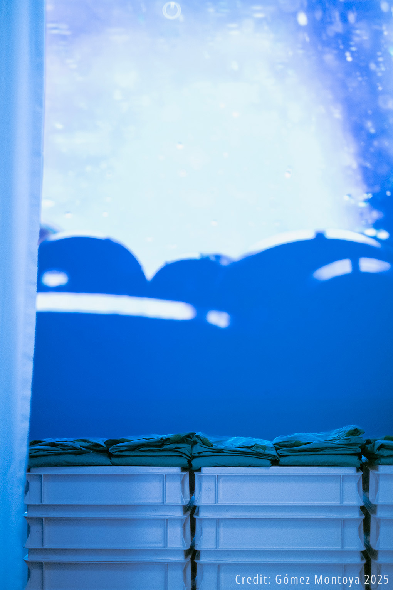

The Care Cycle
Short film and video installation
Gowns made far away are worn for a moment,
disposed after a single use.
But what is thrown away, does not go away.
It moves, it accumulates, it stays with us.
Leaving harmful residues of plastic and toxic chemicals,
drifting into air and seeping into earth, rivers, and bodies.

Where art meets science
The Care Cycle is a short film that highlights the environmental impact of healthcare by following the "life cycle" of surgical gowns, from oil extraction to disposal / afterlife. Through observational imagery and a poetic voiceover, The Care Cycle traces the geographies of materials across manufacturing, use, and disposal, refiguring the infrastructure of the hospital and medical equipment as embedded in planetary systems.
The film combines the scientific method of life cycle assessment with the observational and emotional art of filmmaking. Produced in collaboration with the Centre for Sustainable Healthcare at Amsterdam UMC, the project contributes to broader efforts to embed environmental accountability within healthcare and systems design. The Care Cycle premiered as a video installation and screening at Dutch Design Week, October 19-26 2025. Screenings continue to take place among medical communities, in classrooms and lecture theatres.
An abridged version of The Care Cycle is available on the Amsterdam UMC YouTube channel.






- Research, concept, production, and narration: Lucy Sabin, Florine de Haes
- Film direction, cinematography, sound, edit: Eleni Vrettakou, Leidy Karina Gómez Montoya
- Funding: The Centre for Sustainable Healthcare, Amsterdam Public Health Institute, RE4GREEN (Horizon Europe)